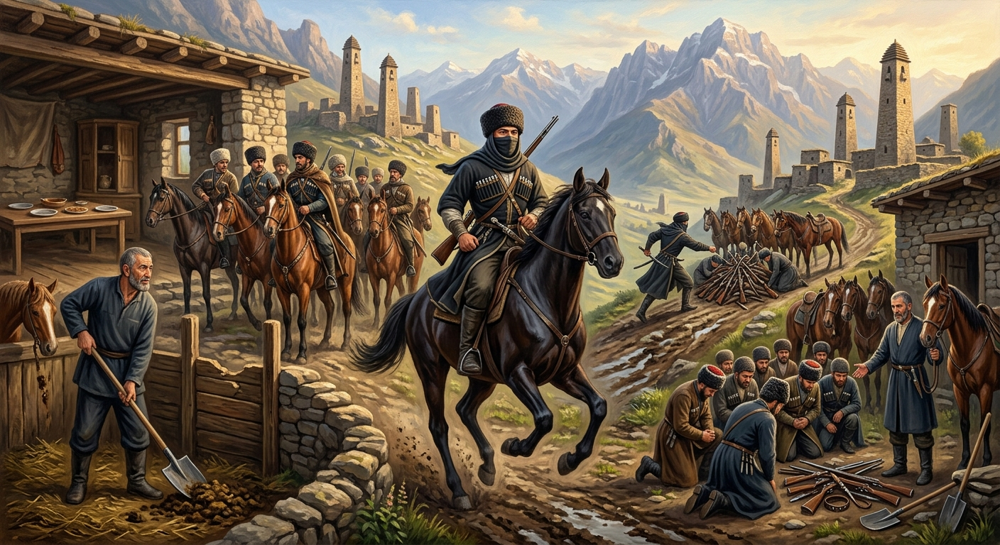

И.А. Дахкильгов. Хьехаме дувцарш - поучительные рассказы-притчи.
И.А. Дахкильгов. Хьехаме дувцарш - поучительные рассказы-притчи. Из ингушского фольклора.

Аьдий Сурхой денал
ЧӀоагӀа цӀи хеза къонах хиннав Аьдий Сурхо. Из вовза а цунца доттагӀал тасса а ваха хиннав кхойтта баьри. Хетто-ош цун коа баьлча, кхо доахаш, балха барзкъш дувхаш, юкъарача дегӀара воллаш цхьа къонах бӀаргавейнав царна. Аьдий Сурхо хаьттача, цу къонахчо, кастта чувоагӀа из, аьнна, хьаьший яьл цӀагӀа бигаб. Кхы дукха ха яьлалехьа Сурхо духьала вахав царна. Укхо ше дӀавейзийтача: - Коа кхо доахаш ваьллар веций хьо? - аьнна, хаьттад. - Сецца бакъ да-кха из, - аьннад. Цох ца тешаш, Сурхой бежӀу ва ер, яхаш, хьаьший гӀайттаб, шунах мотт ца тохаш бахаб коара баьнна. Дукха юкъ йоацаш, герзах кийчавенна, дӀатӀехьа лаьллай Сурхос. Юхьах палчакх а хьоарчаяь, дӀадухьала а ваха, уж кхойтте а дӀаэккхавеш, хьаэккхавеш, вейхав цо. Цар мел хинна герзаши дойи ийца, эккхийта дӀавахав. Кхы баха моттиг а йоацаш, Сурхой цӀенгахьа эттаб баьреш. Уж юха а хьаьший санна хьатӀа а ийца, Сурхос аьннад царга: - ХӀанз теший шо со Сурхо волга?, - хаьттар цо, - Села хаьшк берца буртилг миссел мара дац, хӀаьта а боккха хи божабу цо. Кхо доахаш, сай цӀагӀа кулг тохаш со хилар фуд? Бел-бахьа ловзоча кулга гердз ловзаде ховргдац моттар шоана! Духьала ала кхы хӀама а доацаш, эхь хийтта бисаб хьаьший.
РУССКИЙ
Мужество Сурхо, сына Ады
Славный Сурхо, сын Ады, был весьма известным в народе мужчиной. Желая подружиться с ним, отправились в путь тринадцать всадников. Расспрашивая людей, они доехали до его дома. Во дворе они увидели мужчину среднего роста, одетого в рабочую одежду. Он ловко орудовал лопатой и убирал навоз. Когда всадники спросили хозяина дома, этот мужчина ответил, что Сурхо вскоре вернется, и предложил им пройти в гостиную. Не мешкая переодевшись, перед гостями предстал Сурхо. Когда он представился, гости спросили его: - Это ты убирал навоз? - Верно. Так оно и было, - ответил Сурхо. Засомневались гости, посчитали, что какой-то батрак обманывает их. Они не притронулись к еде, что является большим оскорблением, и уехали со двора. Недолго думая, Сурхо вооружился и поскакал вслед. Закрыв половину лица башлыком, он накинулся на всадников. Не давая им опомниться, Сурхо гонял из взад и вперед. Наконец, отобрав все оружие и всех коней, Сурхо ускакал восвояси. Некуда было деваться всадникам, и они, понурившись от стыда, повернули к дому Сурхо. Он вновь принял их как дорогих гостей, вернул коней и оружие, и сказал: - Теперь вы верите, что я и есть Сурхо? Молния несет с собою головешку величиною с просяное зернышко. Однако эта малюсенькая головешка валит огромные деревья. Что из того, что я ростом не столь велик, что я тружусь по дому и убираю, когда надо, навоз? Вы что же, полагали, что приученная к труду рука не может умело обращаться с оружием? Нечего было ответить гостям. Устыдились они и промолчали.
ENGLISH
The Bravery of Surkho, Son of Ady
The valiant Surkho, son of Ady, was a man well known amongst the people. Wishing to befriend him, thirteen horsemen set off on their journey. Asking people for directions, they rode to his house. In the courtyard, they saw a man of medium height, dressed in work clothes. He was skilfully wielding a spade and clearing manure. When the horsemen asked the master of the house, this man replied that Surkho would be back shortly, and invited them into the living room. Without delay, Surkho changed his clothes and appeared before his guests. When he introduced himself, the guests asked him: 'Was that you clearing the manure?' 'That's right. That's exactly what happened,' replied Surkho. The guests became suspicious, thinking that some farmhand was trying to deceive them. They did not touch the food—which is a great insult—and rode away from the farmyard. Without a moment's hesitation, Surkho armed himself and galloped after them. Concealing half his face with his hood, he pounced on the horsemen. Before they could react, Surkho chased them back and forth. Finally, having seized all their weapons and horses, Surkho galloped off home. The horsemen had nowhere to go, and, hanging their heads in shame, they turned towards Surkho's house. He welcomed them once more as honoured guests, returned their horses and weapons, and said: 'Do you believe now that I am indeed Surkho? Lightning carries with it a spark no bigger than a grain of millet. Yet this tiny spark brings down enormous trees. What does it matter that I am not so tall, that I work around the house and clear away manure when necessary? Did you really think that a hand accustomed to labour could not skilfully wield a weapon? The guests had no reply. Ashamed, they remained silent.
НОХЧИЙН
ПОГОВОРКИ